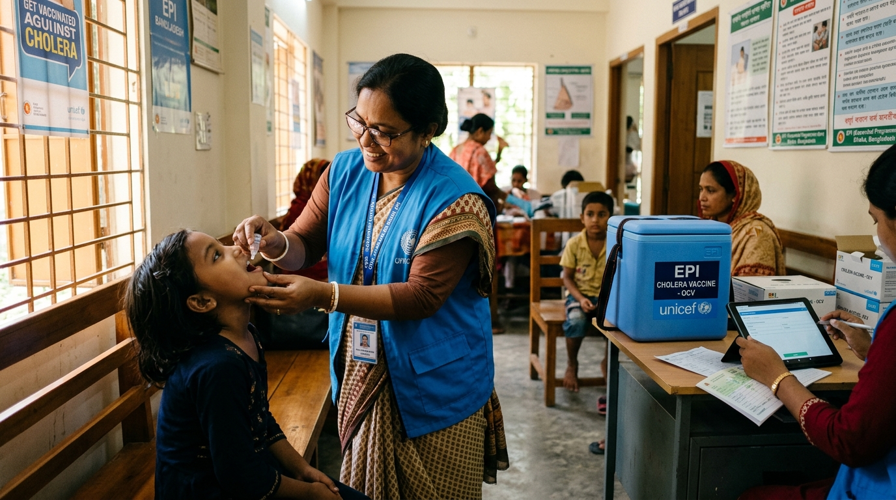

Bangladesh’s Shift to Preventive Cholera Vaccination
How targeted oral vaccines, local research, and digital tracking are reshaping the country’s approach to cholera control.
Founder, Bangladesh Open Research Academy • nehal.has9@gmail.com

For decades, the arrival of the monsoon across Bangladesh brought a predictable rise in waterborne diseases. At the icddr,b hospital in Mohakhali, medical teams worked around the clock during seasonal peaks to rehydrate and treat cholera patients. Bangladesh has long been recognized globally for developing oral rehydration solution (ORS) and keeping case fatality rates low. Even so, cholera has remained an ongoing challenge in crowded urban settlements and flood-prone districts.
Today, that situation is changing. Health authorities are no longer relying only on emergency care after outbreaks occur. Instead, the Directorate General of Health Services (DGHS) and the Ministry of Health and Family Welfare are rolling out large-scale preventive Oral Cholera Vaccination (OCV) campaigns. This strategy aims to protect high-risk populations before transmission begins.
Moving from Emergency Response to Prevention
Historically, cholera interventions in Bangladesh were largely reactive. Teams rushed supplies and set up field clinics only after an outbreak was already confirmed. Under the National Cholera Control Plan (NCCP), the government has adopted global health targets to reduce cholera cases and deaths by 90% by 2030.
To meet this goal, health authorities launched a mass preventive vaccination drive targeting over 51.75 lakh people across 14 priority zones. These areas include dense urban neighborhoods in Dhaka North and South, such as Lalbagh, Kamrangirchar, and Tejgaon. The drive also covers vulnerable upazilas in Munshiganj, Narayanganj, Kishoreganj, and Brahmanbaria. This rollout serves as the first phase of a broader national plan. Over time, it will expand to 144 high-risk upazilas across the country.
The Two-Dose Regimen and Domestic Research
The campaign relies on WHO-prequalified oral vaccines, specifically Euvichol and Euvichol-S. The vaccine is administered as a liquid. It is approved for everyone aged one year and older, excluding pregnant women and individuals with severe acute illness.
Much of the global evidence supporting oral cholera vaccines was established in Bangladesh. Field trials led by Dr. Firdausi Qadri and researchers at icddr,b demonstrated that the vaccine is highly effective. Taking the complete two-dose course at least 14 days apart provides strong protective immunity for three to five years. Financed by Gavi, the Vaccine Alliance, and procured through UNICEF, these doses are distributed free of charge. Families can receive them at local clinics, schools, and Expanded Programme on Immunization (EPI) centers.
Digital Registration and Grassroots Logistics
Delivering more than 1.03 crore doses requires coordinated grassroots logistics. To streamline distribution and track coverage, the government linked the campaign to the VaxEPI digital platform (vaxepi.gov.bd).
Eligible residents register using their National ID (NID) or digital birth certificate to generate a vaccination card. In Dhaka alone, the government set up roughly 300 vaccination centers. Health workers also assist walk-in participants on-site. This ensures that families without internet access or smartphones are not left out.
Water, Sanitation, and the Limits of Immunization
Public health experts emphasize that vaccination is a supportive measure, not a standalone cure. The bacterium that causes cholera, Vibrio cholerae, spreads mainly through contaminated water and poor sanitation.
Because of this, health authorities stress that immunization must be paired with better municipal water services. Key priorities include repairing damaged WASA supply lines, encouraging household water boiling or chlorination, and promoting handwashing with soap. While oral vaccines provide temporary biological immunity, long-term disease elimination depends on reliable clean water.
Looking Ahead to 2030
Bangladesh’s preventive cholera campaigns mark a practical step forward in public health management. By combining local clinical research, digital record-keeping, and targeted community delivery, the country is making steady progress. With continued investment in clean water and vaccination, ending cholera as a recurring public health threat is well within reach.
About the Author
Md. Nehal Hasnain is the Founder of the Bangladesh Open Research Academy (BORA). He works on open-access research training, computational epidemiology, and genomic surveillance.
Contact: nehal.has9@gmail.com